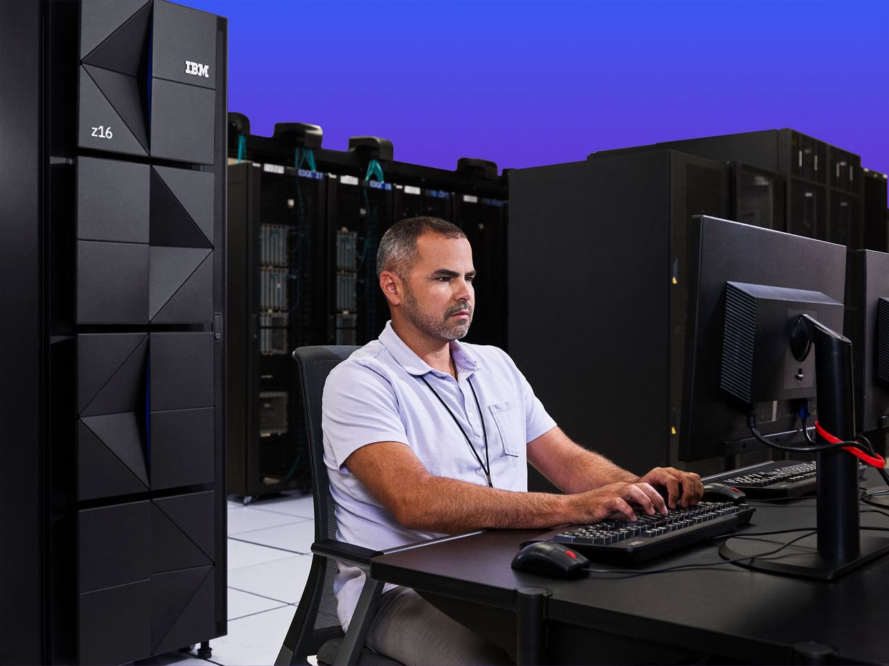
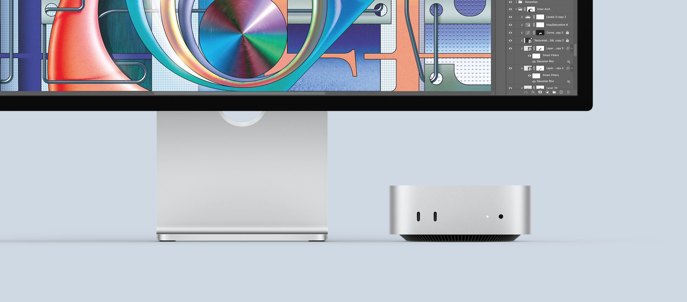
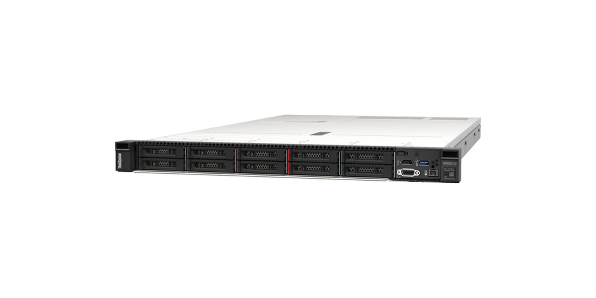

Supercomputer
The supercomputer is a high-performance system that is made in order to solve complex computation problems, and handle massive amounts of data sets. They are able to solve around one-quintillion calculations per second. They are quite heavy and large, utilizing parallel processing via multiple processors yet they are quite powerful as well, made especially for advanced data simulations and analyses.
In general, supercomputers are specialized for complex computations that require multiple streams of data, and input/output. Utilizing supercomputers allows simulations to be faster, and even simulations way out of league of the home computer to be achievable.
Mainframe Computers
A mainframe is another high-performance system that allows computers to contain large amounts of memory, and processes billions of simple transactions in real time. Due to its nature, it also boasts high resiliency and security. It is also quite heavy and large due to its main purpose of “transaction processing in real time”.
It is easy to confuse the mainframe and supercomputer since their power is almost the same, however notice that the main difference is with their use case. In general, the mainframe is made for transaction-based tasks, whereas the supercomputer can handle multiple calculations per second via parallel processing. Therefore, a task that requires multiple streams of massive data and processes should be handled by the supercomputer, while heavy transaction based tasks should be handled by the mainframe.


Mini Computers
A mini computer is a type of system less powerful than a supercomputer or mainframe, but almost having the same power as a personal computer. Mainly utilized for file and database management. Its general size is in-between a micro-computer and a mainframe.
To summarize, mini computers are used for simple management tasks that do not require the power of a mainframe nor supercomputer, but still is robust enough to handle these tasks on its own. Old mini computers generally were in-between the sizes of a micro-computer and a mainframe due to the technology at that time, however nowadays the term now refers to small and compact-sized computers that can be fit in one’s pocket.
Server
A server is a type of system that is made for sharing resources with other computers in the same designated network such as web hosting, file sharing, etc. Due to it sharing resources, a server computer will always be online, utilizing a request-response mode instead of real-time in order to save its distributed resources for when a request is received. In general, computation is usually distributed to various processes and devices.
Therefore, a server can be simply summarized as a distributed computer, where its resources are shared across different users (or computers), with the main cost being that since its resources are shared, multiple users can slow down the system. In return, its usefulness is immeasurable due to only utilizing a request-response model, and you can measure this especially with how important web hosting services are nowadays.


Workstations
A workstation is a system that is mainly served for one user only, with more advanced capabilities (such as more graphical power, processing power, more storage capacity, and more memory capacity) than a normal personal computer.
Where a server is a type of computer system designed for sharing resources, a workstation prioritizes one user’s experience overall. While workstations are less capable than a server (due to its focus not needing to share its resources, therefore resulting in components solely made for only providing one user the best possible usage), they are more powerful than the normal personal computer.
Micro-Computers
A microcomputer is the personal computer of most households today. It holds only 1 microprocessor, but is very popular due to how affordable it is, and can come in various sizes as compared to the other types of computers. Micro-computers are catered to running mainstream operating systems such as Windows, macOS, Linux, etc., therefore making it easy for the user to set-up and get going.
Thus, the micro-computers are the main thing that we think about when someone says “I have a computer at home”. Due to it being widely available and affordable, no wonder why we call it the “personal computer”, as this is the personal computer of our homes.
In conclusion, every computer type has varying use cases, from personal and home use to multi-processing and simulations usage, every type is different from each other. To better visualize what these types of computers can do, and to compare and contrast them as well, let us turn to a table format in order to better understand what makes them different from each other.

Real-Life Examples of the Different Types of Computers
| Type | Sample Image Source | Description | Main Usage |
|---|---|---|---|
| Supercomputer | El Capitan |
Processing speed: 2.79 exaflops (fastest). Memory: 5,568 TiB. Power: ~35 MW. Handles massive parallel processing and complex scientific computations. |
Scientific research, weather forecasting, molecular modeling, etc. |
| Mainframe Computers | IBM z16 |
Processing speed: ~200 GiPS (~200 Gigaflops). Memory: up to 40 TB. Power: 35–40 kW. Optimized for thousands of concurrent transactions and extensive database operations. |
Banking systems, insurance, ERP, large-scale data processing. |
| Mini Computers | Mac Mini |
Processing speed: ~4.26 Teraflops. Memory: up to 32 GB. Power: ~155W. Compact design, handles terminal and batch jobs efficiently. |
Small business servers, departmental computing, development workstations. |
| Server | Lenovo ThinkSystem SR630 V2 |
Processing speed: ~13.5 Teraflops. Memory: up to 8 TB. Power: up to 1800W. Designed for multi-user applications and enterprise-grade performance. |
Web hosting, database management, application serving, cloud infrastructure. |
| Workstations | Lenovo ThinkStation P7 |
Processing speed: ~10–15 Teraflops. Memory: up to 2 TB. Power: 1000–1450W. Optimized for graphics-intensive and professional single-user applications. |
CAD, 3D rendering, video editing, scientific analysis, engineering simulations. |
| Micro Computers | Dell XPS 15 |
Processing speed: ~1–2 Teraflops. Memory: up to 64 GB. Power: 50–150W. Affordable, handles basic computing tasks and office applications. |
Personal use, office work, gaming, education, general productivity. |
Capabilities of the Types of Computers
| Type | Name/Brand | CPU | Memory | Processing Speed | Calculating Power | Working Principle | Energy Consumption | Field of Use |
|---|---|---|---|---|---|---|---|---|
| Supercomputer | El Capitan | AMD MI300A | 5,568 TiB (6,122 TB) | ~11,039,232 cores, Base: 1.0 GHz, Boost: 2.1 GHz | 2.79 Exaflops (~2,790 Petaflops), ~2,790,000,000,000 MIPS | Parallel Computing | ~35 MW | Scientific research (e.g., molecular modeling simulations) |
| Mainframe Computers | IBM z16 | IBM Telum Processor | Up to 40 TB | Up to 200 cores (8 cores/chip, max 32 chips), 5.2 GHz | ~200 GIPS (~200,000 MIPS or 200 Gigaflops) | Transaction Processing | 35–40 kW | Enterprise resource planning, large-scale data processing |
| Mini Computers | Apple Mac Mini M4 | Apple M4 | Up to 32 GB | 10 cores (4 performance + 6 efficiency), Base: 3.2 GHz, Boost: 4.4 GHz | ~4.26 Teraflops, ~140,000 MIPS | Parallel Computing | 155 W | Small business servers, departmental computing |
| Server | Lenovo ThinkSystem SR630 V2 | 3rd Gen Intel Xeon Scalable | Up to 8 TB | Up to 40 cores per CPU (2 CPUs), Base: 2.0 GHz, Boost: 3.8 GHz | ~13.5 Teraflops, ~304,000 MIPS | Client-Server Computing | Up to 1800 W | Web hosting, database management, cloud infrastructure |
| Workstations | ThinkStation P7 Tower | Intel Xeon W9-3595X | Up to 2 TB | 60 cores, Base: 1.9 GHz, Boost: 4.8 GHz | ~10–15 Teraflops, ~288,000 MIPS | Parallel Computing | 1000–1450 W | CAD, 3D modeling/rendering, video editing, scientific analysis |
| Micro Computers | Dell XPS 15 | Intel Core i9-13900H | Up to 64 GB | 14 cores (6 performance + 8 efficiency), Base: 2.6 GHz, Boost: 5.4 GHz | ~1–2 Teraflops, ~75,600 MIPS | Parallel Computing | 50–150 W | Personal/home use: office work, gaming, education |
Conclusion & Reflection
Based on the information provided, I have come to fully understand that computers are really such intricate things. Every computer in the world has their own uses, their own faults, and their own benefits. There is really no such thing as a computer that can “fit all needs” as everyone’s needs are different, therefore we are allowed to choose what is best for us in terms of availability and our use case. For one, it can be argued that the supercomputer is “the computer that can do it all” since it is quite powerful, yet no one at home has enough power, nor the knowledge on how to use that behemoth of a machine, thus why micro-computers were made, for people who do not need that much power and just require the basics. For two, the mainframe is next to the supercomputer, yet its use case is vastly different as its focus is on transactional tasks, not parallel processes. For three, the server, workstation, and mini-computers are closer in comparison to the micro-computer, however they are vastly different in terms of functionality since the server focuses on multiple users, the workstation focuses on one user, and the mini-computer is for use cases that do not require that much computing power, or need to be fit in small tight spaces. And at last, the micro-computer is made to be affordable, popular, and user friendly to the general masses in order to introduce them to computers, and the internet alongside it. Therefore, it can be said that computers are related universally in terms of what they are, yet internally, their make and build is different due to what they are made to do. Utilizing the best components for that type of work requires the applied knowledge of physical limitations, the user’s interests, and pricing of components. In conclusion, we should not take for granted our computers, the internet, and web services, for even if they power all of what we do, we still have to marvel and thank the people who paved the way in order to build, and create them despite the elements of the environment, and limiting factors as well.
References
- 1.1 Computers and their uses | General concepts | Siyavula. (n.d.). Siyavula. https://www.siyavula.com/read/za/computer-applications-technology/grade-12/general-concepts/01-general-concepts
- Admin. (2024, April 5). Computing paradigms. Coders Helpline. https://www.codershelpline.com/courses/theorypapers/cloud-computing/computing-paradigms/#Parallel_Computing
- Apple. (n.d.). Mac mini - Technical Specifications. Apple (Philippines). https://www.apple.com/ph/mac-mini/specs/
- Becher, B. (2024, July 31). 6 Types of Computers to Know. Built In. https://builtin.com/articles/types-of-computers
- Britannica Editors. (2009, March 12). Minicomputer | Definition & Facts. Encyclopedia Britannica. https://www.britannica.com/technology/minicomputer
- Digital around the world — DataReportal – Global Digital Insights. (n.d.). DataReportal – Global Digital Insights. https://datareportal.com/global-digital-overview
- El Capitan: NNSA’s first exascale machine. (n.d.). Advanced Simulation and Computing. https://asc.llnl.gov/exascale/el-capitan
- GeeksforGeeks. (2025a, July 11). What is a Server? GeeksforGeeks. https://www.geeksforgeeks.org/computer-networks/what-is-server/
- GeeksforGeeks. (2025b, July 23). What is Microcomputer? GeeksforGeeks. https://www.geeksforgeeks.org/computer-organization-architecture/what-is-microcomputer/
- GeeksforGeeks. (2025c, July 23). What is Minicomputer? GeeksforGeeks. https://www.geeksforgeeks.org/computer-organization-architecture/what-is-minicomputer/
- IBM z16. (n.d.). https://www.ibm.com/products/z16
- Lenovo ThinkSystem SR630 V2 Datasheet (withdrawn product). (n.d.). Lenovo Press. https://lenovopress.lenovo.com/datasheet/ds0125-lenovo-thinksystem-sr630-v2
- Pottenger, Morton, W., Freiberger, A. P., Hemmendinger, David, Swaine, R. M. (2025, October 17). Computer | Definition, History, Operating Systems, & Facts. Encyclopedia Britannica. https://www.britannica.com/technology/computer
- Rana, K. (2025, May 19). Types of computers. ArtOfTesting. https://artoftesting.com/types-of-computers
- Sire, T. (2025, June 30). How Many Servers Are There in the World? Tech Pulsion. https://techpulsion.com/how-many-servers-are-there-in-the-world/
- Susnjara, S., & Smalley, I. (2025, July 22). Mainframe. What is a mainframe? https://www.ibm.com/think/topics/mainframe
- The Editors of Encyclopaedia Britannica. (1998a, July 20). Microcomputer | Definition, Examples, Uses, & Facts. Encyclopedia Britannica. https://www.britannica.com/technology/microcomputer
- The Editors of Encyclopaedia Britannica. (1998b, July 20). Workstation | Definition & Facts. Encyclopedia Britannica. https://www.britannica.com/technology/workstation
- The Editors of Encyclopaedia Britannica. (2025, October 17). Digital computer | Evolution, Components, & Features. Encyclopedia Britannica. https://www.britannica.com/technology/digital-computer
- ThinkStation P7 (Intel) Tower Workstation | Lenovo Philippines. (n.d.). https://www.lenovo.com/ph/en/p/workstations/thinkstation-p-series/thinkstation-p7-workstation/len102s0012
- Using El Capitan Systems: Hardware Overview | HPC @ LLNL. (n.d.). https://hpc.llnl.gov/documentation/user-guides/using-el-capitan-systems/hardware-overview
- What is a Computer Server? | Splunk. (n.d.). Splunk. https://www.splunk.com/en_us/blog/learn/computer-servers.html
- XPS 15 9530 Laptop | Dell USA. (n.d.). Dell. https://www.dell.com/en-us/shop/dell-laptops/xps-15-laptop/spd/xps-15-9530-laptop